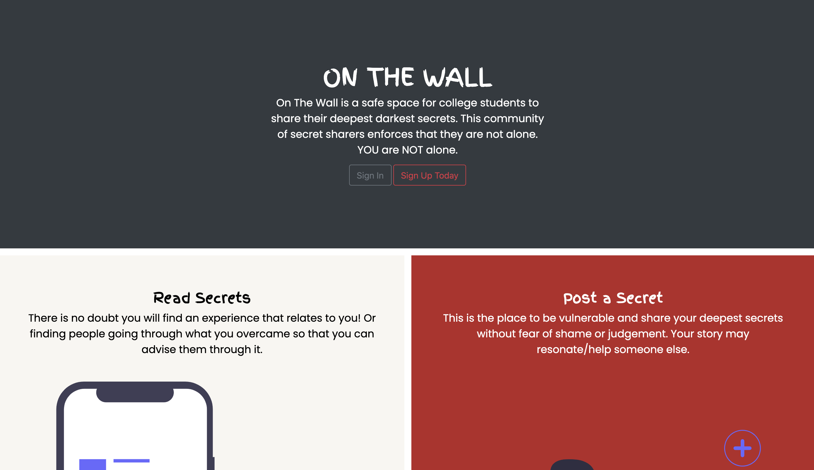

On The Wall
A secret sharing platform, for you and me.
At a glance
On The Wall is a secret sharing platform where anyone, primarily students are able to express themselves anonymously. This idea
Project Team
- Dominique Dorvil
- Jeffron Addy, Back End
- Fernanda Sesto, Back End
- TA, Product Manager
What I did
- Front End
- UX Writing
- Prototyping
- Research
Duration
- Feb 2021 - May 2021
- Revisted: Summer 2021
Problem
On the Wall helps college students express themselves and share their thoughts, feelings, opinions, and experiences. This platform will be designed so that young people will not feel like they are alone! This will be done by creating a social media like website/platform where students can anonymously (under a false pseudonym or what we call an alias) share their secrets and read, like, and comment on the secrets of others!
Research
Competitive Analysis
The Wall
This idea was inspired by a bathroom at my university. The bathroom in Morey Hall had a wall filled with anonymous secrets sprawled all over it. While, it did look like a mess, it was so great, personally, for me to connect with those unknown women on the wall (this is how the title of the project came about). However, becuase it DID look like a mess, facilities repainted the wall which resulted in an uproar where news articles were written and communications from the school had to be sent out. I then thought, if there was a digital version of the wall, nobody would be able to erase it, or paint over it. This is one of the cons of The Wall and the others are:
- Stationary. Only able to view wall in one location.
- If someone doesn't have a writing utensil, they cannot participate.
- The secrets are not categorized by topic or by date. The latter means that I never know if the wall has been updated since it is so messy.
- When people respond to one another, the other person may never know that someone responded (lack of notification) and sometimes longer threads can be messy to follow.
- Since the wall is in a bathroom stall, a person engaging with the wall, can hold up others that want to interact with the wall as well or people that actually want to use the bathroom
- Since the bathroom is labeled as 'Womens' there's a percentage of the population on campus that cannot interact with the wall.
- Old secrets have been erased forever from the new paint job.
- Very Centric to the UofR
- The existence of this wall spawned others like our website and the new Instagram page
- Can post secret anonymously
University of Rochester's Confessions' Instagram Page
This Instagram page sprung about during the pandemic. It has a link to a website called Tellonym which allows users to share their secrets. Then the adminstrators screenshot the secret and posts it on Instagram.
- Anyone at the University can use it and interact with it anywhere because it is online
- Can share secrets anonymously.
- On an app that people use regularly
- You have to go to another website to post your secret.
- The adminstrators may not post your secret.
- The adminstrators post multiple secrets in one post so your secret may not get as much attnetion since it can be overshadowed by other secrets. This means it is also more of a hassle for responders to specifically point out and address the specific secret they want to respond to.
- The secrets are anonymous but the users commenting and liking on Instagram are not. Some people may be less reluctant to post, like, comment or share.
- Secret sharers are unable to remove their secret if they no longer want it to be up (plus it will reveal their identity)
- Since this is a page run by students from the same school as users, the adminstrators are unknown but knows everyone's info when users interact with them on Instagram.
Our Solution, On The Wall, the website
Our solution allows for all users, secret posters and respondees to be 100% anonymous if they wish (they can choose to have their alias as their real name). Our solution is online and cannot be erased by anyone except the user themselves. Our platform is not centeric to any specific university or place. Some cons are that users have to go out of their way to use platform and it doesn't come in app form. Each secret will get the attention that they deserve and is ordered from new to old (the user can switch it to old to new as well.)
Low Fi Prototype
This was our initial idea of the webiste. However, some features anticipated did not make its way into the final product such as showing the posts the user liked, who they are following and how many followers they had.

Ideation
Requirements
The major goal for creating the project was to learn how to create a database. Therefore, the requirements were:
- Read and post confessions anonymously.
- Delete their confessions.
- Update their confessions.
- Create, delete, update their user account
User Stories
- User can sign up for an account
- User can log in to their account
- User can log out of their account
- User can post confessions
- User can view confessions
- User can edit confessions
- User can delete confessions
- User can like confessions
- User can unlike confessions
- User can comment confessions
- User can view comments
- User can add a category
- User can add a category to a post
- User can view posts in certain category
- User can view a list of categories
- User can sort posts by date ascending
- User can sort posts by date descending
- User can see how many likes a post has
- User can create an alias
- User can edit an alias
- User can see their own alias in the feed
- User can see other users’ alias in the posts
Key Take Aways
Real World Experience
It was cool to have a real world experience where we met with our team for our weekly sprints to go over the completed tasks and new tasks and using industry terms. Another thing that made it real worldly is that it is a finished product (published online) that is fully functioning.
New Technolgies
This project gave me a beginner's knowledge on databases. To accomplish this we had to use Flask and Python which meant having a lot of interaction with the commandline (not as fun but very important to know/practice). Also, learning how to launch the website online was a new process for me as well!
What would I do differently?
I decided to revisit this project to add research components. After taking an HCI course, I thought the project would greatly benefit from having some formal research to back up our reasonings for pursuing the project. I also thought user testing of our website was missing so I would like to conduct some tests. I also would have liked to focus more on branding.